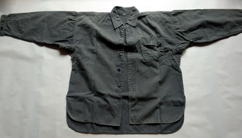
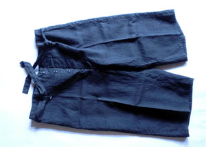
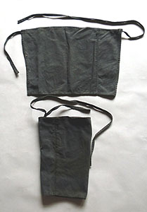
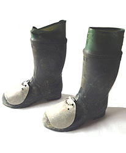

展示品 （提供 浜崎忠勝氏）   坑内作業着 作業着は毎年無料配布。ズボンは七分丈と長ズボンがあり、 長ズボンを使用する者は脚絆を装着しない者が多かった。  脚絆  坑内保安靴 坑内保安靴には長靴と短靴があり、いずれもつま先に鉄板が入っており、 さらにその上にもう一つ鉄板を取り付けていた。採炭や掘進等、現場で作業する者は長靴を履いていた。長靴には「ミドリ安全」とメーカ名が記されてある。
展示品 （提供 浜崎忠勝氏）
作業着は毎年無料配布。ズボンは七分丈と長ズボンがあり、 長ズボンを使用する者は脚絆を装着しない者が多かった。
坑内保安靴には長靴と短靴があり、いずれもつま先に鉄板が入っており、 さらにその上にもう一つ鉄板を取り付けていた。採炭や掘進等、現場で作業する者は長靴を履いていた。長靴には「ミドリ安全」とメーカ名が記されてある。